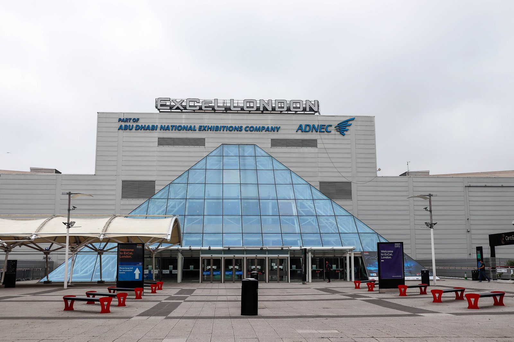
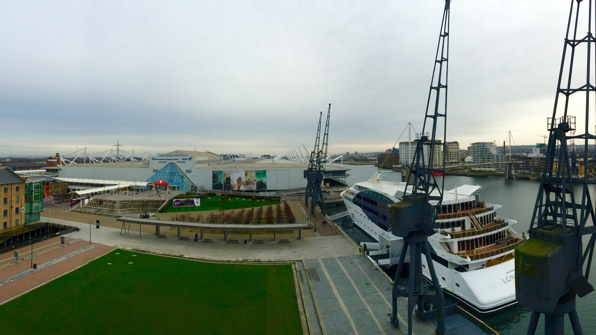

Venue · Exhibition grounds
ExCeL London
- Type
- Exhibition grounds
- Location
- London, United Kingdom
- Address
- One Western Gateway, Royal Victoria Dock, London E16 1XL
- Capacity
- 68,750 capacity
- Exhibition space
- 84,328 m²
- Halls
- Official Event Halls page: 87,328 m² of column-free space divided into North and South Event Halls, in 2,000 m² modules, with a stated capacity of 68,750 visitors at any one time. ExCeL vital-statistics PDFs (May 2025 / April 2026) instead list 84,328 m² for those halls, plus ICC Maritime Halls totalling 11,521 m² (Halls 1–6). The International Convention Centre (ICC) at ExCeL includes an auditorium published at 4,603 m² / up to 4,200–5,000 seats depending on the source document, and Capital Hall of 4,518 m² (banquet up to 2,700). AIPC and London Convention Bureau factsheets state 100,000 m² of total exhibition/flexible event space. Because the official hall-area figures do not agree, exhibition_sqm is left null and the figures are recorded here.
- Official website
- https://www.excel.london/
About
London's Royal Docks exhibition and convention campus, including the International Convention Centre at ExCeL. Official organiser pages give North and South event halls with a 68,750-visitor capacity; total exhibition area is stated as 100,000 m² on AIPC and London Convention Bureau sheets, while ExCeL's own hall PDFs and website differ by a few thousand square metres, so no single exhibition_sqm is stored. The atlas lists many large tech, education and trade events here. Official April 2026 vital-statistics sheet states 84,328 m² of column-free event-hall space and a total capacity of 68,750 guests; that sheet is now used for exhibition_sqm (earlier public figures of 87,328 and 100,000 are treated as superseded or inconsistent).
Spaces
| Name | Type | Capacity | Area |
|---|---|---|---|
| North and South Event Halls (combined column-free space) | — | 68,750 | 84,328 m² |
| ICC Maritime Hall 1 | — | — | 1,672 m² |
| ICC Maritime Hall 2 | — | — | 1,693 m² |
| ICC Maritime Hall 3 | — | — | 2,044 m² |
| ICC Maritime Hall 4 | — | — | 2,188 m² |
| ICC Maritime Hall 5 | — | — | 2,054 m² |
| ICC Maritime Hall 6 | — | — | 1,940 m² |
Official documents
- ExCeL London vital statistics — metric (May 2025) Technical specification
- ExCeL London vital statistics — event halls (April 2026) Capacity chart
Upcoming events
- Black Hat Europe 2026London, United KingdomTech
- AI Engineer Europe 2027London, United KingdomAI
- Cloud & AI Infrastructure London 2027London, United KingdomTech
- Infosecurity Europe 2027London, United KingdomTech
- Bett UK 2027London, United KingdomEducation
- Tech Show London 2027London, United KingdomTech
- Learning Technologies 2027London, United KingdomEducation
- Cisco Live 2027 London (EMEA)London, United KingdomTech
- Retail Technology Show 2027London, United KingdomTech
- Gartner Data & Analytics Summit London 2027London, United KingdomAI
- Schools & Academies Show London 2027London, United KingdomEducation
- Technology for Marketing (TFM) 2027London, United KingdomTech
- Digital Construction Week 2027London, United KingdomTech
- Space-Comm Expo Europe 2027London, United KingdomTech
- Gartner Cybersecurity & Risk Management Summit London 2027London, United KingdomTech
- FinTech Connect 2026London, United KingdomFinance
- The London Book Fair 2027London, United KingdomExpos
- IFE 2027 (International Food & Drink Event)London, United KingdomExpos
- UK Construction Week London 2027London, United KingdomExpos
- WTM London 2027 (World Travel Market)London, United KingdomExpos
Sources
- Official source — https://www.excel.london/visitor/destination-london/exhibitor/venue-services/organiser/venue-spaces/event-halls
- Official source — https://www.excel.london/uploads/excel-london-vital-stats---metric---may-2025.pdf
- Official source — https://www.excel.london/uploads/excel_vital_stats-event-halls_uk_april-2026.pdf
- Official source — https://www.conventionbureau.london/venue/178413-excel-london
- Official source — https://aipc.org/?aipc_member_pdf=1309